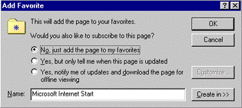
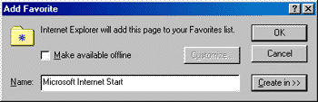
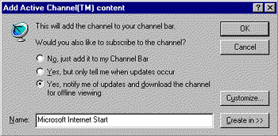
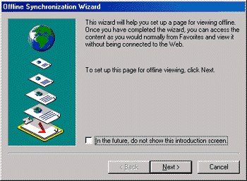
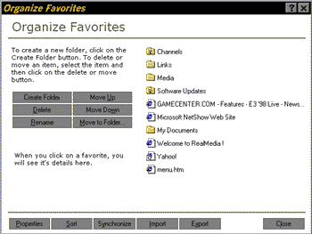

|
| ||
|
| ||
Michael Edwards
Developer Technology Engineer
Microsoft Corporation
Updated: March 18, 1999
Contents
Introduction
Activating Windows Desktop Update
The Updated Favorites List
All Your Favorite Places
Organizing Your Favorites List
Favorites Bar and Menu
Subscriptions and Internet Explorer 5
Channels and Internet Explorer 5
Code Samples and How They Run in Internet Explorer 5
Adding Channels
Adding a Page to the Favorites List
Adding a Desktop Item
Checking if Someone is Already Subscribed to a Channel
Summary
With the release of Internet Explorer 5  , Microsoft has refined several browsing features introduced in Internet Explorer 4.0: channels, subscriptions, and offline viewing. While many users found these features helpful, your feedback (and our usability studies) caused us to re-examine how they were organized. For those of you looking to upgrade to Internet Explorer 5, we also fiddled with the setup download options available to minimize the amount of time you spend downloading the upgrade files.
, Microsoft has refined several browsing features introduced in Internet Explorer 4.0: channels, subscriptions, and offline viewing. While many users found these features helpful, your feedback (and our usability studies) caused us to re-examine how they were organized. For those of you looking to upgrade to Internet Explorer 5, we also fiddled with the setup download options available to minimize the amount of time you spend downloading the upgrade files.
This article will run though all the major changes we've made. I'll start with the changes for downloading the Windows® Desktop Update. Then I'll discuss the navigational changes we've made to simplify subscriptions, channels, and offline viewing. I'll close with some sample code snippets developers use on their pages to deal with channels et al, and discuss how Internet Explorer 5 processes them.
Oh so long ago, when you were downloading Internet Explorer 4.0, you were given the option of installing the "Windows Desktop Update" component in addition to the Internet Explorer 4.0 browser. The desktop update was the software component that integrated the browser with the Windows shell and enabled the Active Desktop™ (which Nancy Cluts and I wrote about in The Active Desktop for Internet Explorer 4.0). While integrating the browser with the Windows shell enabled a lot of cool features, it also made the download size, well, a bit hefty. The Internet Explorer 5 download solves this problem by separating browser functions (the user interface, and so on) from the Windows shell features that support browsing (such as the Active Desktop). In other words, Internet Explorer 5 is designed to work with or without the Windows Desktop Update; the primary Internet Explorer 5 download, however, does not install the Windows Desktop Update by default.
If you are using Internet Explorer 5 without the desktop update installed, and try to access functionality that requires the Active Desktop (such as adding a desktop component), you will get an error dialog. Unfortunately, the error dialog isn't super helpful, only telling you to install the Windows Desktop Update. What it should say is that you must first uninstall Internet Explorer 5, then install Internet Explorer 4.01 SP1 (from the Microsoft Windows Update for Internet Explorer  page) with the Windows Desktop Update, and then reinstall Internet Explorer 5.
page) with the Windows Desktop Update, and then reinstall Internet Explorer 5.
Just to be clear, the Windows Desktop Update has not changed since Internet Explorer 4.01 SP1 was released last winter.
When Microsoft studied how customers were using Internet Explorer 4.0, we learned they had difficulty using the Add to Favorites option of the Internet Explorer Favorites menu (where they bookmarked the URLs of their favorite Web pages). So we made it easier. We also made the Favorites list easier to organize. And while we were at it, we consolidated some features previously associated with channels and subscriptions. Now don't freak out. Channels and subscriptions aren't dead, they're just accessed and named differently -- as I will explain.
Here is a snapshot of Internet Explorer 4.0's Add to Favorites dialog:

Figure 1. Internet Explorer 4.0 "Add to Favorites" dialog
Here is its Internet Explorer 5 equivalent:

Figure 2. Internet Explorer 5 "Add to Favorites" dialog
The first thing you will probably notice is that it looks like we removed the subscription stuff (notice that I said it looks like). Actually, we just replaced the radio buttons with a Make available offline check box. Since customers know what "offline" means, the whole notion of subscribing becomes easier to understand.
If the Web page in question references a channel definition format (CDF) file (and therefore supports subscriptions), the Make available offline box is checked by default. If the user keeps the box checked, Active Desktop will use the CDF file to set the subscription parameters. (If you don't know what a CDF file is, try reading George Young's series of channel articles.) If the Web page does not reference a CDF file and the user checks the Make available offline box, Active Desktop will cache that one page (a CDF file, by contrast, can specify a bunch of files to cache).
We also simplified the Customize button functionality. The graphic below shows how Internet Explorer 4.0 responds when a user selects a CDF file.

Figure 3. Internet Explorer 4.0 "Add Active Channel" dialog
In Internet Explorer 5, the Add to Favorites dialog box replaces the above dialog. Pressing the Customize button displays a dialog akin to the Internet Explorer 4.0 Subscription Wizard (renamed the Offline Synchronization Wizard) that steps the user through the customization process:

Figure 4. Internet Explorer 5 "Offline Synchronization Wizard" dialog
Finally, we made the Create In button sticky, which means users can both expand and contract the additional dialog box the button generates, and preserves that state the next time the dialog is opened.
Hopefully as a result of all this simplification, users will conceptualize channels as pages that are cached for offline viewing.
Internet Explorer 4.0 customers were quite clear in their comments about how we implemented the Favorites list functionality. Although it was useful, it was hard to figure out. So we fixed it. For some time we have been telling people that you can build really cool, rich user interfaces using Internet Explorer and Dynamic HTML. Well, the new Organize Favorites dialog shows we can practice what we preach.

Figure 5. Internet Explorer 5 "Organize Favorites" dialog
This new dialog is implemented using Dynamic HTML and the ShowHTMLDialog() function exported from mshtml.dll (read all about HTML Dialog Boxes in the Workshop's "Reusing Browser Technology" area).
If you are familiar with how to organize a Favorites list in Internet Explorer 4.0, you'll probably recognize that this new dialog includes functions and capabilities that were spread across several dialogs, folders, and menu items. For example, the Properties button, as it should, brings up the property sheet for the highlighted item; in Internet Explorer 4.0, you had to navigate to the Favorites folder and right-click to access the properties for a favorite Web site. In addition, the Synchronize button updates all your offline items and replaces the Update All Subscriptions item from the Internet Explorer 4.0 Favorites menu.
You might notice some new functionality, too. For example, you can arrange your Favorites list according to whatever criteria you choose, rather than alphabetically. Even more cool, now you can move a Favorites list to and from other computers -- another common request from customers.
Internet Explorer 5 simplifies the Explorer bar and menu features for your Favorites list. In Internet Explorer 4.0, channels appeared in the Channel bar, as a folder in the Favorites menu, and in the Favorites bar. This was confusing to customers and unnecessarily complicated. In Internet Explorer 5, we removed the Channel bar and its button in the toolbar, but kept channel content accessible directly from the Favorites bar and menu. Doing so supports the notion that a channel is a set of Web pages that can use Dynamic HTML and other Internet Explorer innovations, and whose structure and scheduling information are described in a CDF file.
When adding a Web site to the Favorites list (by selecting Add to Favorites in the Favorites menu, selecting a CDF file, or clicking on an "Add Active Channel" graphic), what determines whether it goes in the Channels folder? Internet Explorer 5 only creates a Channels folder when upgraders from the Internet Explorer 4.0 browser used one. Users that upgrade from Internet Explorer 3.0, buy a new computer with Internet Explorer 5 preinstalled, or upgrade from Internet Explorer 4.0 without the Active Desktop installed, won't get a Channels folder.
Internet Explorer 5 users don't have to distinguish between sites that offer a CDF file and those that don't. If they want to be able to view a site offline, they check the Make available offline check box in the Add to Favorites dialog. Nor do they need to understand how sites with a CDF file will have their CDF hierarchy indicated under their Favorites item. If a Web page in the Favorites list does not have a CDF file (or the CDF file does not specify an update schedule), and the user has checked the Make available offline check box, Internet Explorer 5 will only update its offline content when the user selects the Synchronize item from the Favorites menu. Mind you, this is nothing new. The same functions exist in Internet Explorer 4.0, albeit under different names or places.
Repeat after me: Subscriptions are fully supported in Internet Explorer 5. When an Internet Explorer 4.0 customer upgrades to Internet Explorer 5, all their subscriptions will continue to function. And an Internet Explorer 5 user can still subscribe to Web sites that use CDF files to indicate subscription content and update schedules.
Subscriptions are, however, easier for customers to understand and use. As I stated earlier, a subscription to a Web site in Internet Explorer 5 is simply an entry in the Favorites list with offline browsing enabled. Evolving the terminology and functions of subscriptions mandated some additional menu and dialog-box modifications. For one thing, the Update All Subscriptions item in the Favorites menu in Internet Explorer 4.0 has been changed to Synchronize in Internet Explorer 5. Similarly, the Subscriptions folder is now called the Offline pages folder. That also meant that the Manage Subscriptions menu item in the Favorites menu needed to change to Manage Offline Pages.
As with subscriptions, channels are fully supported in Internet Explorer 5. When an Internet Explorer 4.0 user upgrades to Internet Explorer 5, all the channel content is maintained. All your work figuring out the CDF syntax was not wasted, because channels are 100 percent supported in Internet Explorer 5.
If you have authored content for the Channel Guide, it's still there, too. In fact, a new Channel Guide item has been added to the Go menu, which is doubly important because Internet Explorer 5 will not install the Channel bar on the desktop by default.
If you have an application or Web site that offers a subscription, or accesses the Favorites or Channels folders in Internet Explorer 4.0, your code will not break in Internet Explorer 5. I will make this clear by going over some script and HTML examples typically found on Web sites.
If you offer your Web page as a channel, you might use code similar to the example below from George Young's CDF 101: Creating a Simple Channel article:
<A href="http://www.microsoft.com/workshop/prog/ie4/channels/dhtml.cdf"> <IMG BORDER=0 src="http://www.microsoft.com/workshop/prog/ie4/channels/addchan.gif"> Click here to subscribe to our sample Dynamic HTML Channel.</A>
Or perhaps you use script instead, as shown in the example below:
<SCRIPT>
window.external.AddChannel("the URL to your CDF file goes here");
// this calls AddChannel() in ShellUIHelper, so has the same
// effect as calling ShellUIHelper.AddChannel from C++, Visual
// Basic, or any other language
</SCRIPT>
Each of these methods work in Internet Explorer 5. Instead of activating the Internet Explorer 4.0 dialog boxes, however, they will bring up the new Add to Favorites dialog box (with the Make available offline box already checked if there is a <SCHEDULE> tag in the CDF file). If users select the Customize button, they can change the default update schedule indicated in your CDF file (again assuming it uses <SCHEDULE> tags). If they choose not to customize the update schedule, the default schedule will apply. Of course, they can uncheck the Make available offline button. In that case, the pages will still be added to the Favorites list, but won't be maintained in a cache for offline viewing, and won't be updated when the Synchronize offline pages menu item is activated.
Because the Channel bar will not be available in Internet Explorer 5, there is no longer a need for the larger channel logos. If a CDF file provides references a 16x16 icon (using the <LOGO> tag), it will be used in the Favorites bar. If your channel is registered in the Channel Guide, it will still use your 80x32 and 194x32 logos. If you put a 16x16 icon file named favicon.ico at the root of your domain, it will be used for any of your pages added to the Favorites list. Also, you could include a <LINK REL="…" href="blah.ico"> in the HTML of any page that requires a custom icon. If no 16x16 icons are available, the default HTML icon will be used.
To avoid asking too many pesky questions, many sites check in the background to see if a visitor already has a subscription before asking them directly. They might use code like the following:
<SCRIPT>
if (window.external.IsSubscribed("the url to the cdf file"))
; // don't ask them to subscribe
else
; // ask them to subscribe
// this calls IsSubscribed() in ShellUIHelper, so has the same
// effect as calling ShellUIHelper.IsSubscribed from C++, Visual
// Basic, or any other language
</SCRIPT>
This script will work fine in Internet Explorer 5, and will return the state of the offline property of a page added to the Favorites list. In other words, if you pass a URL that is a Favorites item with offline viewing enabled, Internet Explorer 5 will return True.
Another feature scripters commonly offer site visitors is the option of adding their site to the user's Favorites list for them. The following code was taken from Knowledge Base article Q025843:
<OBJECT ID="ShellUIHelper" WIDTH=0 HEIGHT=0 CLASSID="CLSID:64AB4BB7-111E-11d1-8F79-00C04FC2FBE1"> </OBJECT> <SCRIPT LANGUAGE=VBSCRIPT> ShellUIHelper.AddFavorite "url of page to add", "suggested page name" </SCRIPT>
An easier way avoids the use of the <OBJECT> tag entirely, and instead uses the AddFavorite() function in ShellUIHelper, is shown below.
<SCRIPT>
window.external.AddFavorite("url of page to add", " suggested page name ");
// this calls AddFavorite() in ShellUIHelper, so has the same
// effect as calling ShellUIHelper.AddChannel from C++, Visual
// Basic, or any other language
</SCRIPT>
Either method will work in Internet Explorer 5. If the user checks the Make available offline check box, and the URL refers to a CDF file, any update schedule you've created will be applied (which the user can override by choosing the Customize button).
Desktop items are indicated in CDF files by a declaration in the <USAGE> tag. Other than that, the code for adding a desktop item in Internet Explorer 5 is the same as for Internet Explorer 4.0 except when the Windows Desktop Update is not installed.
The content delivery engine for Internet Explorer 5 enhanced and integrated channels, subscriptions, favorite site lists, and working offline. Besides making it easier to organize a list of favorite sites, we created new functionality that allows users to specify Web sites that should be available for offline viewing. This is cool because now users can control what is in their cache for viewing offline -- in my opinion, that makes the Work Offline feature introduced for Internet Explorer 4.0 actually usable. But the enhanced offline viewing feature also allowed us to simplify Internet Explorer 4.0 subscriptions by making them look like a Web site that's already configured for offline viewing. We also threw in modified channel features so they appear more like (particularly cool) Web sites.
These changes only affect the Active Desktop to the extent that users access this new and enhanced functionality from their Active Desktop (such as clicking a CDF file in the Windows Explorer), or access Web pages that utilize the Active Desktop (such as adding a desktop component). The other important change is offering a browser update without requiring the user to download the pieces for updating their Windows shell. That makes the download for updating the browser a whole lot smaller, but still allows users to get the desktop update in order to enable the Active Desktop.
And the really terrific part is that it's all been accomplished without breaking anything you might be doing for Internet Explorer 4.0. It's like I always say -- good design looks easy, but usually isn't.
Did you find this material useful? Gripes? Compliments? Suggestions for other articles? Write us!
© 1999 Microsoft Corporation. All rights reserved. Terms of use.